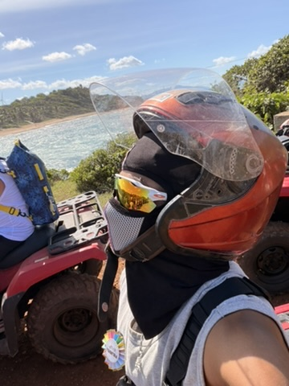

Archie, Adaija A.
I understand that what I put here is publicly available on the web and I won't put anything here that I don't want the public to see -AA 9/6/26
Adaija Archie
Hey there! My name is Adaija and this is my personal introductory page. I'm 25, Alabama born and Florida raised, and love computer science. I hope to use this page to improve my personal HTML skill and express myself in a new way!

- Personal Background: I am 25 and moved here right before COVID. I am originally from Florida and desperately miss the lifestyle out there; however, I don’t see myself going back anytime soon. Womp womp!
- Professional Background: I work as a hiring manager at a popular movie theatre chain here in Charlotte. I have been with them for about five years now, and if all goes well, I intend to use my time with the company to introduce myself to their technical roles once my degree is complete.
- Academic Background: I began my schooling at CPCC and quickly transferred to UNCC for Computer Science.
- Background in this Subject: I have no experience when it comes to front end web design; however, the activity from day one was really engaging since I got a glimpse of what it looks like to make a webpage!
- Primary Work Computer: I typically use my macbook.
- Primary Work Location: Home.
- Alternate Computer & Location: Campus computer at UNC Charlotte
-
Courses I’m Taking, & Why:
- ITIS3200 - Intro to Info Security & Privacy: I've always wanted to learn more about ethical hacking.
- ITIS3135 - Front-End App Development: Required for degree path.
- Funny/Interesting item to remember me by: I have been to more countries than US states!
- I’d also like to share: I looooove my car and absolutely would love to talk car mods with anyone :D
“A diamond is just a lump of coal that did well under pressure.” -Henry Kissinger